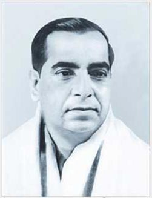

Satikanta Guha 01 June 1910 - 08 January 1991
Satikanta Guha was born in Sunamganj, Sylhet (now in Bangladesh). He was educated at Dhaka Collegiate School, Dhaka, and Hare School and Presidency College, Kolkata. He stood first in First Class in the LLB Examination of Calcutta University.
Though his subject of formal study was history, his real love from childhood was literature. From the age of 15 he started editing journals for children: first Benu, and then Chitra. This brought him into close personal contact with Abanindranath Thakur and Dakshinaranjan Mitra Majumdar. Later he also edited Rangmashal for some time. This well-known journal for the young had earlier published his immensely popular but incomplete serial, Amarlata. He set up several publishing houses, publishing books that included Abanindranath's Rajkahini, Dakshinaranjan's First Boy and Last Boy, and Shibram Chakraborty's Baadi Thekey Paliye. Financial reasons forced him to join a commercial firm, but he soon gave it up, and with his brother Banikanta founded the Purba Parishad, a cultural organization devoted mainly to dance and drama. A ballet troupe under his direction visited Ceylon (Sri Lanka) at the invitation of that country's government. But once again he had to take up a job to earn his livelihood. In 1954 he finally turned away from the world of commerce, and in association with his wife Prity Lata founded South Point.
South Point attracted many talented and gifted personalities as teachers: Utpal Dutt, Kamal Kumar Majumdar, Sekhar Chattopadhyay, Mangalacharan Chattopadhyaya, N. Viswanathan, Surojit Sen, and Gita Ghatak among others. In a little over two decades, South Point came to be acknowledged as the world's largest school in terms of the number of pupils enrolled for an academic year. It enjoyed that distinction for many years. South Point also became synonymous with academic excellence, for year after year its pupils secured ranks among the first ten in all public examinations at the school level.
With South Point firmly established, he turned to his first love. He received the Mouchak Award for his contribution to children's literature, and the Rabindra Puraskar for his novel, Natyakar.
Blessed with a rare insight, he could recognize and appreciate both talent and greatness. Author, painter, singer, dancer, actor, craftsman, scholar - whoever came to him for help, got it ungrudgingly. Those who were genuinely gifted found in him a kindred spirit who befriended, encouraged, and helped them in distress and need. Vishmadeb Chattopadhyay, Gopesh Chakraborty, Subho Thakur, Guru Gopinath, Madhav Menon, Kelu Nair, Sukumar De Sarkar, Indrani Rehman, and Uday Shankar were only a few. During his lifetime South Point was a home to many organizations, like the Little Theatre Group, Ali Akbar College of Music, Ballygunge Cultural Seminar, and Guru Thankmani Kutty's school of dance.